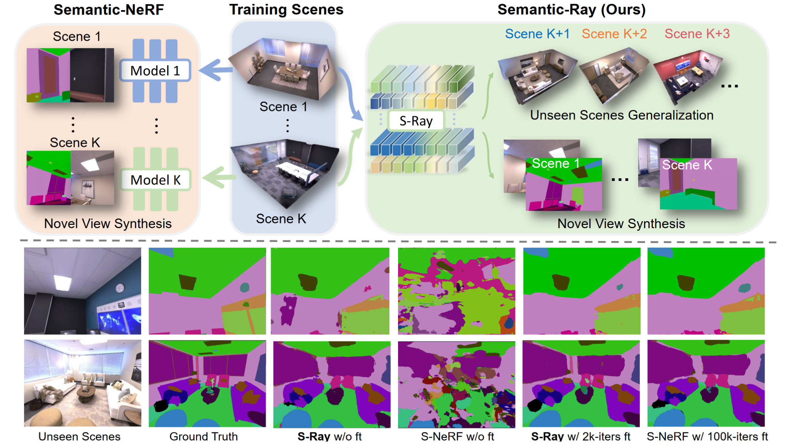
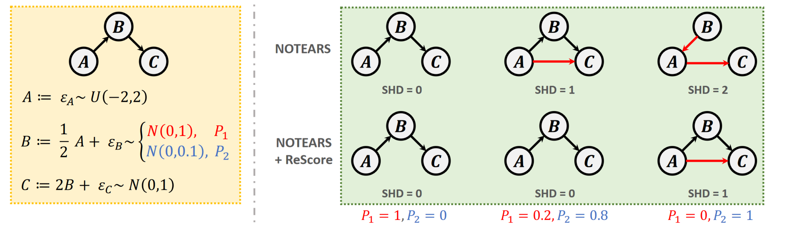

|
Fangfu Liu | 刘芳甫
I am a senior undergeraduate student majoring in Electronic Engineering at Tsinghua University . My research interest lies at the causality, machine learning and 3D computer vision. I aim to build reliable models with a focus on their generalization ability (to unseen data or different domains), robustness (to data noise and bias) and explainability.
Email /
CV /
Google Scholar /
Github
|
|
|
News
2023-02: One paper on NeRF is accepted by CVPR 2023.
2023-01: One paper on Causal Discovery is accepted by ICLR 2023.
|
|
Publications
* indicates equal contribution
|
|

|
Semantic Ray: Learning a Generalizable Semantic Field with Cross-Reprojection Attention
Fangfu Liu,
Chubin Zhang,
Yu Zheng,
Yueqi Duan
IEEE/CVF Conference on Computer Vision and Pattern Recognition (CVPR), 2023
[arXiv]
[Code]
[Project Page]
We propose a neural semantic representation called Semantic-Ray (S-Ray) to build a generalizable semantic field, which is able to learn from multiple scenes and directly infer semantics on novel viewpoints across novel scenes.
|
|

|
Boosting Differentiable Causal Discovery via Adaptive Sample Reweighting
An Zhang,
Fangfu Liu,
Wenchang Ma,
Zhibo Cai,
Xiang Wang ,
Tat-Seng Chua ,
International Conference on Learning Representations (ICLR), 2023
[arXiv]
[Code]
[Project Page]
We propose ReScore, a simple-yet-effective model-agnostic optimzation framework that simultaneously eliminates spurious edge learning and generalizes to heterogeneous data by utilizing learnable adaptive weights.
|
|
Honors and Awards
1st place in the MVP Point Cloud Completion Challenge (ICCV 2021 Workshop)
Baidu Top 100 Chinese Rising Stars in AI (百度AI华人新星百强榜)
CVPR 2021 Outstanding Reviewer
ECCV 2020 Outstanding Reviewer
2nd place in Semi-Supervised Recognition Challenge at FGVC7 (CVPR 2020 Workshop)
2019 CCF-CV Academic Emerging Award (CCF-CV 学术新锐奖)
2019 Chinese National Scholarship
ICME 2019 Best Reviewer Award
2017 Sensetime Undergraduate Scholarship
1st place in 17th Electronic Design Contest of Tsinghua University
1st place in Momenta Lane Detection Challenge
|
|
Academic Services
Co-organizer: Tutorial on Deep Reinforcement Learning for Computer Vision at CVPR 2019 [website]
Conference Reviewer / PC Member: CVPR 2018-2022, ICCV 2019-2021, ECCV 2020-2022, NeurIPS 2019-2022, ICML 2019-2022, ICLR 2021-2023, SIGGRAPH Asia 2022, AAAI 2020-2022, WACV 2020-2022, ICME 2019-2022,
Senior PC Member: IJCAI 2021
Journal Reviewer: T-PAMI, IJCV, T-NNLS, T-IP, T-MM, Pattern Recognition
|
|